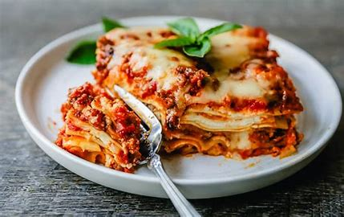

Lasagne

Ingredienten
- **Lasagnebladen** (vers of gedroogd)
- **500 g rundergehakt**
- **1 ui**, fijngehakt
- **2 teentjes knoflook**, fijngehakt
- **1 blik tomatenblokjes** (400 g)
- **2 eetlepels tomatenpuree**
- **1 eetlepel Italiaanse kruiden** (of oregano)
- **Zout en peper**, naar smaak
- **250 g ricotta**
- **250 g mozzarella**, in plakken
- **50 g geraspte Parmezaanse kaas**
- **Olijfolie**, voor het bakken
Bereidingswijze
- **Voorverwarmen**: Verwarm de oven voor op 180°C.
- **Vullen van de saus**:
- Verhit een scheutje olijfolie in een pan.
- Voeg de ui en knoflook toe en bak tot ze glazig zijn.
- Voeg het rundergehakt toe en bak het rul.
- Roer de tomatenblokjes en tomatenpuree erdoor.
- Voeg de Italiaanse kruiden, zout en peper toe. Laat 10 minuten sudderen.
- **Lasagne opbouwen**:
- Begin met een laagje saus in een ovenschaal.
- Leg een laag lasagnebladen erop.
- Voeg een laag ricotta en een laag mozzarella toe.
- Herhaal dit proces tot de ingrediënten op zijn, eindigend met een laag saus.
- **Afwerking**:
- Strooi de geraspte Parmezaanse kaas over de bovenste laag.
- **Bakken**:
- Bak de lasagne in de voorverwarmde oven gedurende 30-35 minuten, tot de bovenkant goudbruin is.
- **Serveren**: Laat de lasagne 10 minuten staan voor het aansnijden.
```
Eet smakelijk!